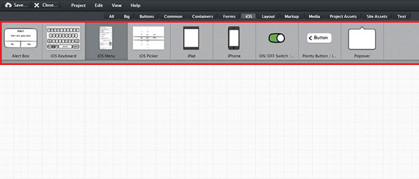
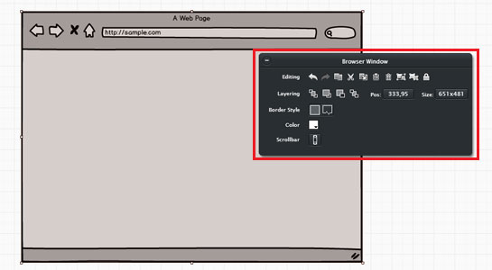
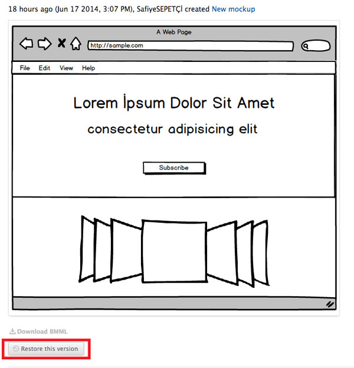
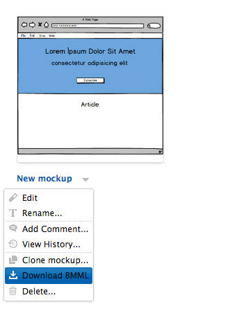
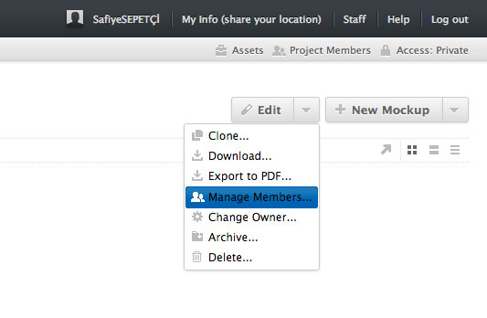

Balsamiq Uygulaması İle Web Arayüzü Tasarımı
Genelde web projeleri arayüzünde, detaylı çizime başlamadan önce bir ön çizim yapılır. Bu çizim son kullanıcının görmesini istediğimiz tasarıma kılavuzluk eder. Bazı arayüz tasarımcıları prototiplendirme işini kağıt üzerinde, bazıları ise bu iş için hazırlanmış programlarda yapar.
Bizler Balsamiq uygulamasını kullanıyoruz. Bu uygulama sayesinde kolay ve hızlı bir şekilde prototipler ve taslak çizimler oluşturabiliyoruz. Bir web sayfasında ya da tasarımını yapacağımız uygulamada kullanılması muhtemel bütün tasarım elemanları balsamiq çizim aracında hazır bulunuyor. Yapmamız gereken tek şey kullanacağımız elemanın rengini, boyutunu ve yerleşim düzenini ayarlamak oluyor. Şimdi balsamiq uygulamasının özelliklerine bir bakalım.
Özellikleri
- Component kısmında tasarım için gereken elemanların bir çoğu hazır bir şekilde kullanılmayı bekliyor. Ama bunlar yeterli gelmediyse kendi tasarımlarımızı tasarıma dahil edebiliyoruz. 
- Farklı component'ler için farklı özellikler karşımıza çıkıyor. Her component'te karşımıza çıkan ortak özellikler ise gruplama, sembole çevirme, kopyalama, geri alma, konum ve boyutlandırma ayarları. Yaptığımız her çalışmayı sembole çevirebilir ve diğer mockup'larda da kolaylıkla kullanabiliriz. 
Ayrıca;
- Oluşturulan mockup‘ lara yorum bırakabilirsiniz.
- Birden fazla kullanıci ile aynı projede ortak çalışma yürütebilirsiniz.
Versiyonlama:
Proje üzerinde çalışırken kaydettiğimiz her değişiklik geri alınabiliyor. Diyelim ki 3 hafta öncesinin çalışmasına geri dönmek istiyoruz, yapacağımız şey dosyayı geri almak veya klonlayıp üzerinden devam etmek olacaktır.

BMML (Balsamiq Mockups Markup Language) dosya uzantılı ürün çıktısı:
Program, çizimi yapılan çalışmanın çıktısını .bmml formatında, indirilmeye hazır bir şekilde bekliyor.
Aynı projede yer almadığınız bir kişiye indirdiğiniz bmml dosyasını göndermeniz yeterli.
Upload edip üzerinde değişiklik yapabilecektir. İstersek pdf formatlı olarak da dosyayı indirebiliyoruz.

Proje üzerinde çoklu çalışma ortamı;
Oluşturduğunuz projeye kişileri dahil edip, aynı anda farklı mockup’ larda çalışabiliyoruz.

Program arayüz tasarlamak için son derece kolay ve kullanışlı.
Sizde kısa sürede öğrenip kullanacağınız bir arayüz oluşturma programı arıyorsanız
balsamiq adresinizi ziyaret edebilir ve bir aylık deneme sürümününden yararlanabilirsiniz.